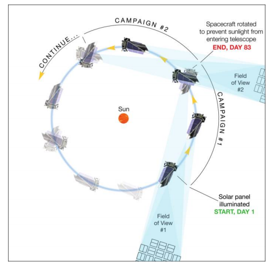

The K2 mission provides the community with an opportunity to continue Kepler’s ground-breaking discoveries in the field of exoplanets and expand its role into new and exciting astrophysical observations. A description of the mission concept and early results can be found in Howell et al. 2014.
K2 observations entail a series of sequential observing "Campaigns" of fields distributed around the ecliptic plane. Each ecliptic Campaign is limited by Sun angle constraints to a duration of approximately 80 days as illustrated in the image below (Howell et al. 2014). Therefore, four to five K2 Campaigns can be performed during each 372-day orbit of the spacecraft.

K2 is a community-driven mission. All K2 targets are proposed by the community through the Guest Observer program. The K2 mission welcomes all proposals including, but not exclusive to, exoplanet, stellar, extragalactic and solar system science. Since K2 offers a photometric precision approaching that of the original Kepler mission, a variety of scientific goals can be readily achieved with K2's continuous, high-precision photometry. The image below demonstrates the precision achieved by K2 in Campaign 3 (orange) compared to Kepler in Quarter 10 (blue) [credit: Andrew Vanderburg, created using the method described in Vanderburg (2014) and Vanderburg & Johnson (2014)].

Scientific motivations
The scientific potential spans a wide range of astrophysics. It is anticipated that K2 will:
- Provide a yield of hot planets around bright stars for follow-up transit spectroscopy to facilitate rapid advances in the characterization of exoplanet atmospheres.
- Provide a yield of small planets around bright, small stars to facilitate the most precise follow-up measurements to date of masses, densities and compositions.
- Identify locations and characteristics of potentially-habitable planets around bright M-dwarfs in the solar neighborhood.
- Determine if hot gas giants exist around young stars, or whether they migrate to small orbits at a later epoch by tidal or other interactions.
- Determine the relationship between stellar structure, rotation and activity within stellar associations over a range of ages and metallicity.
- Identify the progenitors of Type Ia supernovae from photometric structure in the rise to outburst maximum.
- Discover and characterize binary stars within open clusters and stellar associations.
- Characterize internal stellar structure and fundamental properties of stars using the tools of asteroseismology.
- Provide a large, regular cadence survey of AGN activity in the optical bandpass.
- Participate in multi-mission, multi-band monitoring campaigns of ecliptic targets along with other space-based hardware or ground-based telescopes.
Potential targets
- Possible transiting planet hosts
- Known exoplanet hosts
- Pulsating stars
- Rotationally variable stars
- Flaring stars
- Accreting stars and interacting binaries
- Binary stars
- Open clusters
- Stellar associations
- Galaxies and supernovae
- Active galactic nuclei
- Microlenses
- Solar System planets
- Asteroids
- Comets